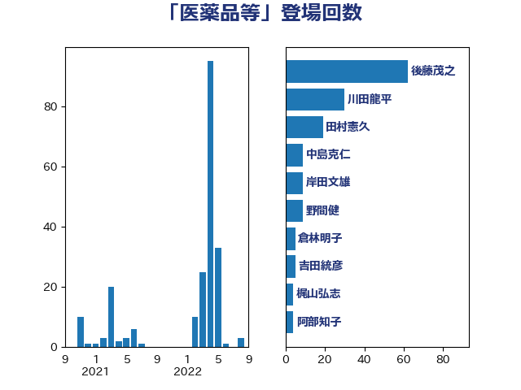

単語「医薬品等」

| 後藤茂之 | 自由民主党 | 62 回 |
| 川田龍平 | 立憲民主党 | 30 回 |
| 田村憲久 | 自由民主党 | 19 回 |
| 中島克仁 | 立憲民主党 | 9 回 |
| 岸田文雄 | 自由民主党 | 9 回 |
| 野間健 | 立憲民主党 | 9 回 |
| 倉林明子 | 日本共産党 | 5 回 |
| 吉田統彦 | 立憲民主党 | 5 回 |
| 梶山弘志 | 自由民主党 | 4 回 |
| 阿部知子 | 立憲民主党 | 4 回 |
| 吉田とも代 | 日本維新の会 | 3 回 |
| 石垣のりこ | 立憲民主党 | 3 回 |
| 三原じゅん子 | 自由民主党 | 2 回 |
| 本田顕子 | 自由民主党 | 2 回 |
| 梅村聡 | 日本維新の会 | 2 回 |
| 森屋隆 | 立憲民主党 | 2 回 |
| 田村まみ | 国民民主党 | 2 回 |
| こやり隆史 | 自由民主党 | 1 回 |
| 井上信治 | 自由民主党 | 1 回 |
| 井坂信彦 | 立憲民主党 | 1 回 |
| 佐藤英道 | 公明党 | 1 回 |
| 小林鷹之 | 自由民主党 | 1 回 |
| 山本博司 | 公明党 | 1 回 |
| 平将明 | 自由民主党 | 1 回 |
| 橋本岳 | 自由民主党 | 1 回 |
| 浜地雅一 | 公明党 | 1 回 |
| 熊野正士 | 公明党 | 1 回 |
| 田中健 | 国民民主党 | 1 回 |
| 石田昌宏 | 自由民主党 | 1 回 |
| 菅義偉 | 自由民主党 | 1 回 |
| 谷田川元 | 立憲民主党 | 1 回 |
| 長谷川淳二 | 自由民主党 | 1 回 |